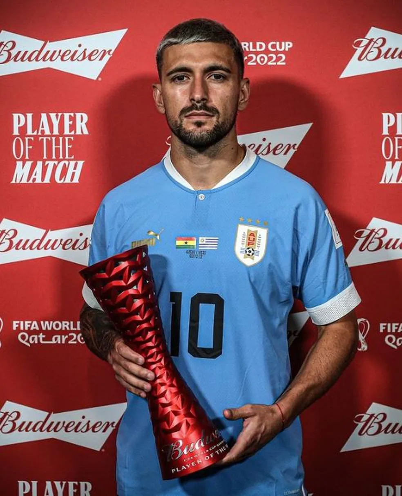
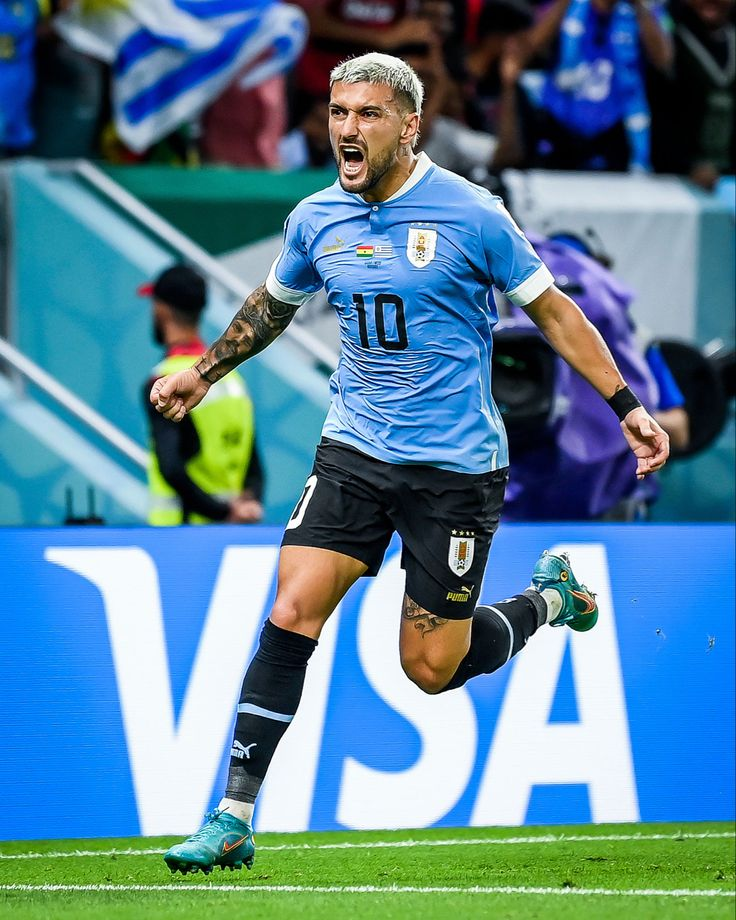
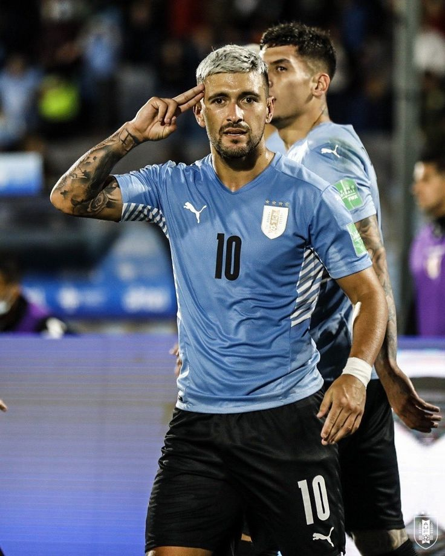

Início no Defensor Sporting
Arrascaeta começou sua trajetória no futebol uruguaio mostrando técnica refinada, visão de jogo e grande capacidade criativa, características que o tornaram uma promessa nacional.
Destaque no Cruzeiro
No Brasil, brilhou com a camisa do Cruzeiro, conquistando títulos importantes e encantando torcedores com gols, assistências e sua habilidade diferenciada.
Ídolo no Flamengo
No Flamengo, tornou-se referência técnica, sendo peça fundamental em conquistas nacionais e continentais, com passes decisivos e gols memoráveis.
Seleção do Uruguai
Vestindo a camisa celeste, Arrascaeta representa seu país em competições internacionais, levando criatividade e inteligência ao meio-campo uruguaio.
Arrascaeta com a camisa do Uruguai


